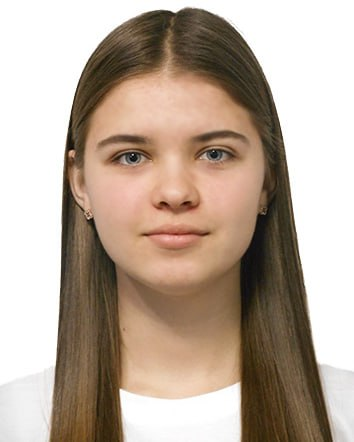

 |
Об’єкт має зберігатися у Сховищі для малоцінних аномальних предметів Зони ██, від’єднаним від телефонної мережі. Підключення дозволяється у рамках проведення експериментів, під час яких об'єкт слід розміщувати у прямокутному приміщенні зі сторонами щонайменше 564х318 см і висотою щонайменше 250 см. |